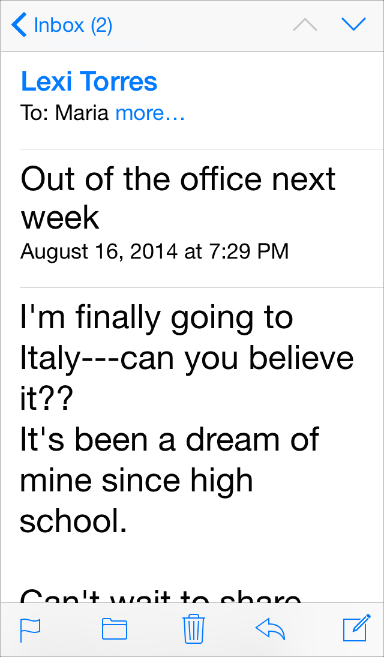

Color and Typography
Color Enhances Communication
In iOS, color helps indicate interactivity, impart vitality, and provide visual continuity. The built-in apps use a family of pure, clean colors that look great individually and in combination, and on both light and dark backgrounds.
If you create multiple custom colors, make sure they work well together. For example, if pastels are essential to your app’s style, you should create a family of coordinating pastels that can be used throughout the app.
Pay attention to color contrast in different contexts. For example, if there’s not enough contrast between the navigation bar background and the bar-button titles, the buttons will be hard for users to see. A quick but unscientific way to find out if your colors have sufficient contrast is to view your app on a device in different lighting conditions, including outdoors on a sunny day.
Although viewing your app on a device can help you find some of the areas you need to work on, it's no substitute for a more objective approach that yields reliable results. This approach involves determining the ratio between the luminance values of the foreground and background colors. To get this ratio, use an online contrast ratio calculator or you can perform the calculation yourself using the formula established in the WCAG 2.0 standard. Ideally the color contrast ratio in your app is 4.5:1 or higher.
Take bar translucency and app content into account when you use a custom bar tint. If you need to create a bar tint that matches a specific color, such as a color in an existing brand, you may have to experiment with various colors before you get the results you want. A bar’s appearance is affected by both the translucency that iOS provides and the appearance of the app content that can be behind the bar.
Be aware of color blindness. Most color blind people have difficulty distinguishing red from green. Test your app to make sure that there are no places where you use red and green as the only way to distinguish between two states or values (some image-editing software includes tools that can help you proof for color-blindness). In general, it’s a good idea to use more than one way to indicate an element’s interactivity (to learn more about indicating interactivity in iOS, see Interactive Elements Invite Touch).
Consider choosing a key color to indicate interactivity and state. Key colors in the built-in apps include yellow in Notes and red in Calendar. If you define a key color to indicate interactivity and state, make sure that the other colors in your app don’t compete with it.
Avoid using the same color in both interactive and noninteractive elements. Color is one of the ways that a UI element indicates its interactivity. If interactive and noninteractive elements have the same color, it’s harder for users to know where to tap.
Color communicates, but not always in the way you intend. Everyone sees color differently, and many cultures differ in how they assign meanings to colors. Spend time to research how your use of color might be perceived in other countries and cultures. As much as possible, you want to be sure that the colors in your app send the appropriate message.
In most cases, don’t let color distract users. Unless color is essential to your app’s purpose, it usually works well to use color as a subtle enhancement.
Great Typography Enables Clear Communication
Apple designed the San Francisco family of typefaces to provide a beautiful, consistent typographic voice and reading experience across all platforms. In iOS 9 and later, San Francisco is the system font.
San Francisco works hand in hand with Dynamic Type to give you:
A range of font sizes that automatically provide superlative legibility and a great reading experience at all user settings, including accessibility settings
Automatic adjustments to letter spacing (tracking) and line height (leading) for every font size
The ability to specify different text styles for semantically distinct blocks of text, such as
Body,Footnote, orHeadlineText that responds appropriately to changes the user makes to text-size settings (including accessibility text sizes)
Download San Francisco by visiting https://developer.apple.com/fonts/. (Note that the San Francisco font for iOS 9 is called SF-UI.) When you adopt San Francisco in your app, you can adjust values in Simulator > Settings to test the appearance of your app’s text at different sizes.
San Francisco consists of two optical sizes: Text and Display. Text is used for sizes that are below 20 points and Display is used for sizes that are 20 points or larger. When you use San Francisco in your app, iOS automatically switches between Text and Display when appropriate.
Type size in points @2x (144 PPI) |
Tracking value |
|---|---|
6 |
41 |
8 |
26 |
9 |
19 |
10 |
12 |
11 |
6 |
12 |
0 |
13 |
-6 |
14 |
-11 |
15 |
-16 |
16 |
-20 |
17 |
-24 |
18 |
-25 |
Type size in points @2x (144 PPI) |
Tracking value |
|---|---|
20 |
19 |
22 |
16 |
28 |
13 |
32 |
12 |
36 |
11 |
50 |
7 |
64 |
3 |
80 and greater |
0 |
To emphasize some text or to create visual relationships among parts of content, you can rely on the semantically defined styles supported by Dynamic Type, such as heading and body, or you can specify font weights, such as thin or semibold. Adopting the Dynamic Type styles makes it easy to communicate meaning in your content, but if you want more control over your design, you can set a particular weight for a particular piece of text. (To learn more about adjusting font weight, see UIFont Class Reference.)
For example, you might want to increase the weight of some text to help users visualize the hierarchy of the content or to draw their attention to a particular word or phrase. Or you might want to create visual cohesion among multiple, nearby labels of different sizes by increasing the weight of small type and decreasing the weight of large type. Font weight also has a significant impact on the overall style and voice of your content, so you might choose a particular weight to achieve a particular design goal.
Prioritize content when responding to text-size changes. Not all content is equally important to users. When users choose a larger text size, they want to make the content they care about easier to read; they don’t always want every word on the screen to be larger.
For example, when users choose a large accessibility text size, Mail displays the subject and body of the message in the large size but leaves the less important text—such as the date and the recipient—in a smaller size.

Make sure all styles of a custom font are legible at different sizes. One way to do this is to emulate some of the ways iOS displays font styles at different text sizes. For example:
Text should never be smaller than 11 points, even when the user chooses the extra-small text size. For comparison, the body style uses a font size of 17 points at the large size, which is the default text-size setting.
In general, font size and leading values differ by one point per text-size setting. Exceptions to this are the two caption styles, which use the same font size, leading, and tracking at the extra-small, small, and medium settings.
At the smallest three text sizes, tracking values are relatively large; at the largest three text sizes, tracking values are relatively tight.
The headline and body styles use the same font size. To distinguish it from the body style, the headline style uses a heavier weight.
Text in a navigation bar always uses 17 points, which is the same as the body text style at the large setting.
Text always uses either regular or medium weight; it doesn’t use light or bold, because light and bold weights don’t read well at small sizes.
In general, use a single font throughout your app. Mixing several different fonts can make your app seem fragmented and sloppy. Instead, use one font and just a few styles and sizes.
Recommended
Not Recommended
Copyright © 2016 Apple Inc. All rights reserved. Terms of Use | Privacy Policy | Updated: 2015-11-05